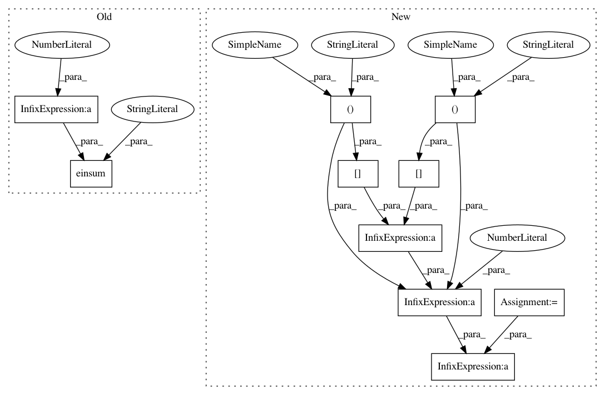

315990901cdcdca241013ee5e6c581391bae2523,geomstats/geometry/spd_matrices.py,SPDMetricBuresWasserstein,exp,#SPDMetricBuresWasserstein#Any#Any#,734
Before Change
ones = gs.ones(eigvals.shape)
vertical_index = gs.einsum("...i,...j->...ij", eigvals, ones)
horizontal_index = gs.einsum("...j,...i->...ij", eigvals, ones)
coefficients = 1 / (vertical_index + horizontal_index)
rotated_lyapnunov = gs.einsum("...ij,...ij->...ij",
rotated_tangent_vec, coefficients)
rotated_hessian = gs.einsum("...ij,...j,...jk->...ik",
rotated_lyapnunov, eigvals,
rotated_lyapnunov)
hessian = gs.matmul(eigvecs, rotated_hessian)
After Change
transp_eigvecs = Matrices.transpose(eigvecs)
rotated_tangent_vec = Matrices.mul(transp_eigvecs, tangent_vec,
eigvecs)
coefficients = 1 / (eigvals[..., :, None] + eigvals[..., None, :])
rotated_sylvester = rotated_tangent_vec * coefficients
rotated_hessian = gs.einsum("...ij,...j,...jk->...ik",
rotated_sylvester, eigvals,
rotated_sylvester)
hessian = Matrices.mul(eigvecs, rotated_hessian, transp_eigvecs)
In pattern: SUPERPATTERN
Frequency: 3
Non-data size: 10
Instances
Project Name: geomstats/geomstats
Commit Name: 315990901cdcdca241013ee5e6c581391bae2523
Time: 2020-12-15
Author: yann.thanwerdas@gmail.com
File Name: geomstats/geometry/spd_matrices.py
Class Name: SPDMetricBuresWasserstein
Method Name: exp
Project Name: geomstats/geomstats
Commit Name: 315990901cdcdca241013ee5e6c581391bae2523
Time: 2020-12-15
Author: yann.thanwerdas@gmail.com
File Name: geomstats/geometry/spd_matrices.py
Class Name: SPDMetricBuresWasserstein
Method Name: inner_product
Project Name: SheffieldML/GPy
Commit Name: 6ed91ce102545bd90644906876e5e18affe82744
Time: 2014-11-20
Author: z.dai@sheffield.ac.uk
File Name: GPy/kern/_src/psi_comp/linear_psi_comp.py
Class Name:
Method Name: psiDerivativecomputations
Project Name: geomstats/geomstats
Commit Name: 315990901cdcdca241013ee5e6c581391bae2523
Time: 2020-12-15
Author: yann.thanwerdas@gmail.com
File Name: geomstats/geometry/spd_matrices.py
Class Name: SPDMetricBuresWasserstein
Method Name: exp